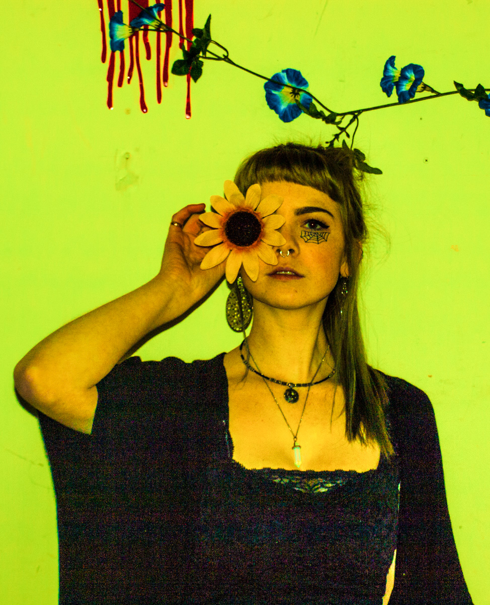

  <main id="main" role="main">
      <div class="grid main">
        <div class="unit unit-xs-1 unit-s-1 unit-m-1 unit-l-1-3">
          <div>
            
          </div>
        </div>

        <div class="unit unit-xs-1 unit-s-1 unit-m-1 unit-l-2-3">
          <div class="infopage">
            <h3>Why I do what I do</h3>
            <p class="info infoinfo">I have an immense passion for art and design and using that passion to help people with their businesses and brands. I specialize in print media (posters, album covers, magazines, and more) and logo design. I always put the needs of my clients first then add a little bit of my clean cut but edgy style into it as well.</p>
            <p class="info infoinfo infoemail">Get in touch! <i>hey@jesspaget.ca</i></p>
            <p class="info infoinfo infoemail">social media links below</p>
          </div>
        </div>
      </div>
    </main>